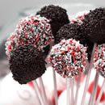

Welcome to Bakery Fakery
Bakery Fakery is a small boutique bakery specializing in cupcakes and fresh seasonal baked goods made with quality ingredients. We are located in the vibrant downtown area of Champaign, Illinois.
Bakery Fakery News
Farmers Market Bound
Starting in early May of 2016 Bakery Fakery will be attending Urbana's Market at the Square. We will have our everyday cupcake flavors available as well a a selection of our seasonal items for purchase
Cake Pops Now Available!

Bakery Fakery cake pops come in a variety of flavors such as Vanilla, Chocolate, Red Velvet, Chocolate Peanut Butter, Birthday Cake, and German Chocolate Cake.
Other flavors can be ordered through our catering department to suit your event/function.
Now Serving Macaroons
Our fresh made macaroons are loved for their fun flavors! Our everyday flavors include Salted Caramel, Strawberry, Vanilla, Chocolate, and Almond.
Our seasonal flavors include Raspberry, Limoncello, Blackberry, and Matcha.